Learning Objectives
- Define accommodation and relative sea level, and explain how eustasy and subsidence/uplift combine in them
- Explain the shoreline as the place where the rates of accommodation and sedimentation are in balance
- Predict the direction of shoreline shift (transgression, normal regression, forced regression) from two rates
- Describe each shift by its stacking pattern (backstepping/forestepping, upstepping/downstepping) and shoreline trajectory
- Read a relative sea-level cycle by its rates, not by its shape, and place the four systems tracts in it
- Explain why the same eustatic curve produces different records under different subsidence and sediment supply
- Interpret three synthetic wells and explain why one sea-level history gives three different records
- Explain why the shoreline trajectory, not lithology or water depth, defines a systems tract
Part I: The Shoreline Is a Moving Balance
1. The question of the course
Students usually learn the definitions of sequence stratigraphy well. The harder part is explaining why a depositional system moves basinward or landward through time. This module deals only with that mechanism. Almost all later terms (surfaces, systems tracts, Wheeler diagrams) follow from it.
2. Accommodation and relative sea level
Accommodation is the space available for sediment to accumulate (Jervey, 1988). It is measured from a datum attached to the substrate, for example the top of the basement. The distance from this datum to the sea surface is the relative sea level. Part of that space is already filled with sediment; what is left is the water depth.
Relative sea level changes for two reasons. The sea surface itself can rise or fall (eustasy), and the substrate can subside or be uplifted (tectonics, including compaction). A change in relative sea level is therefore the sum of the two. Catuneanu (2019a) puts it this way: accommodation is created by relative sea-level rise and consumed by sedimentation, and the water depth is the accommodation still available, i.e. the balance between creation and consumption of space.
relative sea level = water depth + sediment thickness
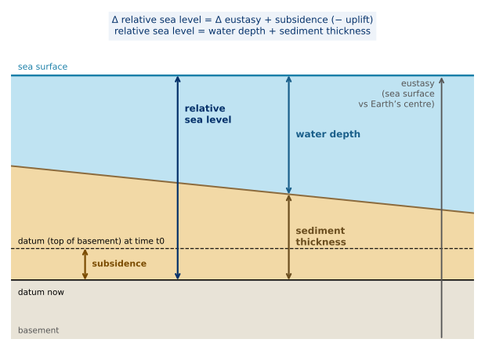
Click to open full resolution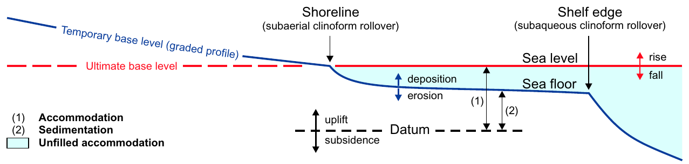
Click to open full resolution3. Two competing rates
At the shoreline two rates compete:
- the rate of change in accommodation, i.e. the rate of relative sea-level change (eustasy + subsidence/uplift);
- the rate of sedimentation, i.e. sediment supply and its delivery to the coast.
At the shoreline, accommodation and sedimentation are always in balance. The shoreline shifts to a new equilibrium position whenever relative sea level or sediment supply changes (Catuneanu, 2019a). Landward of the shoreline the basin is overfilled, basinward of it underfilled; the shoreline is the only place where accommodation and sedimentation have to be treated as two separate controls (Catuneanu, 2019a).
Key concept: rise does not mean landward
A rising relative sea level does not guarantee a landward-moving shoreline. The direction depends on the balance between the two rates. A transgression in the rocks therefore does not by itself tell you that sea level rose fast: it may also mean that very little sediment arrived.
Sediment supply is not the same as sedimentation rate
Catuneanu (2019a) separates the two: high sediment supply does not necessarily give high sedimentation rates, because sediment can bypass high-energy areas and accumulate elsewhere. The parameter that controls stacking patterns at the shoreline is the rate of sedimentation. In this module "sedimentation" always means the rate at the shoreline.
Part II: Three Ways a Shoreline Can Move
4. Transgression, normal regression, forced regression
There are only three ways a shoreline can move. Each is defined by a lateral component (backstepping = landward, forestepping = seaward) and a vertical component (upstepping, downstepping). The path of the shoreline through time is the shoreline trajectory.
| Shoreline shift | Condition at the shoreline | Stacking pattern | Trajectory | Systems tract |
|---|---|---|---|---|
| Transgression (landward) | relative sea level rises faster than sedimentation fills the new space | retrogradation: backstepping + upstepping | transgressive | TST |
| Normal regression (seaward, during rise) | relative sea level rises, but sedimentation outpaces the creation of space | progradation + aggradation: forestepping + upstepping | ascending regressive | LST or HST |
| Forced regression (seaward, during fall) | relative sea level falls (negative accommodation) | progradation + downstepping: forestepping + downstepping | descending regressive | FSST |
The trajectory names (ascending regressive, descending regressive, transgressive) are those used in trajectory analysis (Helland-Hansen & Hampson, 2009); Catuneanu (2019a) equates them with normal regression, forced regression and transgression. Remember three things: landward; seaward and up; seaward and down.
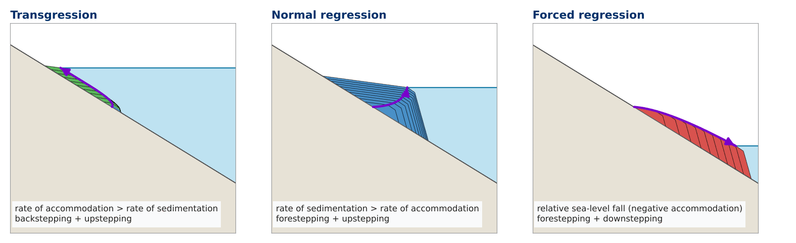
Click to open full resolution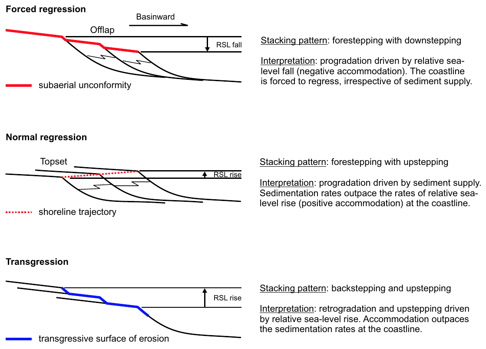
Click to open full resolutionKey concept: forced regression ignores sediment supply
During a relative sea-level fall at the shoreline, the shoreline is forced seaward and downward whatever the sediment supply. More sediment makes the forced regression faster or thicker; it does not change its type. Catuneanu (2006, p. 90) puts it as the shoreline being "forced to regress irrespective of the sedimentation factor"; the same wording, "irrespective of sediment supply", appears in Catuneanu (2019a, Fig. 25; Figure 4). Conversely, a regression during relative rise is never a forced regression, however fast it progrades.
5. Try it: the shoreline balance
Set the two rates at the shoreline. The logic is exactly that of the lecture: a relative fall gives forced regression regardless of sedimentation; during a relative rise, the larger of the two rates decides the direction. The extra panel lets you build the rate of relative sea-level change from eustasy and subsidence.
Part III: One Sea-Level Cycle, Four Responses
6. Read the rates, not the curve
Put the three cases into one cycle of relative sea level: fall, lowstand, rise, highstand. Most students read the curve directly: sea level falls, the sea goes away; sea level rises, the sea comes in. That is not correct. What matters is the rate of relative sea-level change compared with the rate of sedimentation (here kept constant):
- Fall (rate negative) → forced regression, FSST, whatever the sediment supply.
- Early rise, rate of rise < rate of sedimentation → shoreline still moves seaward: lowstand normal regression, LST.
- Rate of rise > rate of sedimentation → transgression, TST.
- Late rise, rate of rise < rate of sedimentation again → highstand normal regression, HST, although sea level is still rising.
The shoreline changes direction where the two rate curves cross, not at the highest or lowest point of the sea-level curve. Catuneanu (2006, p. 92) calls the equation of base-level fall with regression and base-level rise with transgression "a common misconception": the turnaround from fall to rise is offset from the turnaround from regression to transgression by the duration of the early-rise normal regression, and the onset of fall is offset from the onset of regression by the duration of the late-rise normal regression.
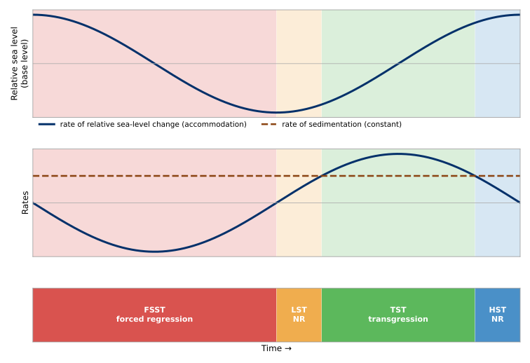
Click to open full resolution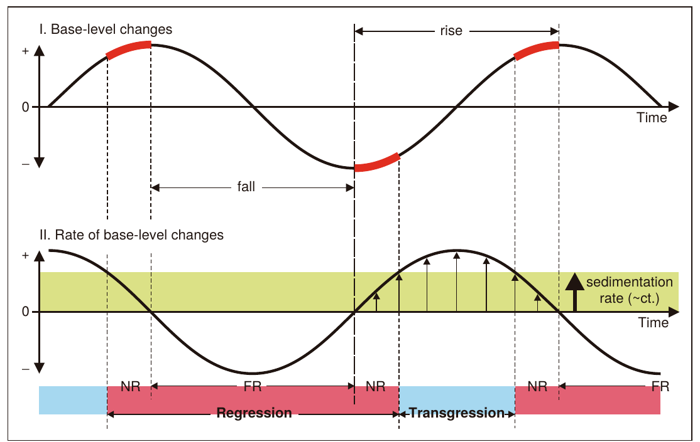
Click to open full resolutionWhen and where do the turnarounds form?
End of transgression: when, at the shoreline, the rate of relative rise drops back below the rate of sedimentation. The shoreline is at its most landward position; the surface formed at this moment is the maximum flooding surface (Block 5). End of regression: when the rate of relative rise first exceeds the rate of sedimentation; the shoreline is at its most basinward position (maximum regressive surface). Catuneanu (2019a) describes both surfaces as points of equilibrium between the rates of creation and consumption of space, before the shoreline changes direction. Neither forms at the top or bottom of the sea-level curve. This is the root of the common confusion between the maximum flooding surface and the sequence boundary: the first is tied to a crossing of two rates, whereas the surfaces most often used as sequence boundaries (subaerial unconformity with the basal surface of forced regression or the correlative conformity) are tied to the onset or the end of relative fall (Lectures 2 and 5).
7. Lowstand or highstand?
Normal regression occurs twice in the cycle. The two are told apart by what comes before them: a normal regression that follows a forced regression is a lowstand normal regression; one that follows a transgression is a highstand normal regression (Catuneanu, 2019a, citing Catuneanu, 2006). Ideally the lowstand trajectory is concave-up (accelerating rise: from mostly progradation to mostly upstepping), the highstand trajectory convex-up (decelerating rise: from mostly upstepping to mostly progradation). Because these ideal shapes are not always visible, the most reliable criterion is the preceding stacking pattern of equal hierarchical rank (Catuneanu, 2019a).
Part IV: Tectonics and Sediment Supply Change the Response
8. Same eustatic signal, four records
Keep the same eustatic signal and change only tectonics or sediment supply:
- A, reference: the full cycle with all four responses.
- B, high subsidence: the basin subsides faster than sea level can fall. Relative sea level never falls, so there is never a forced regression. The shoreline only alternates between transgression and normal regression.
- C, high sediment supply: sedimentation always beats the creation of space. There is no transgression; the shoreline keeps moving seaward, also while sea level rises.
- D, very low sediment supply: every rise produces a transgression; there is no normal regression.
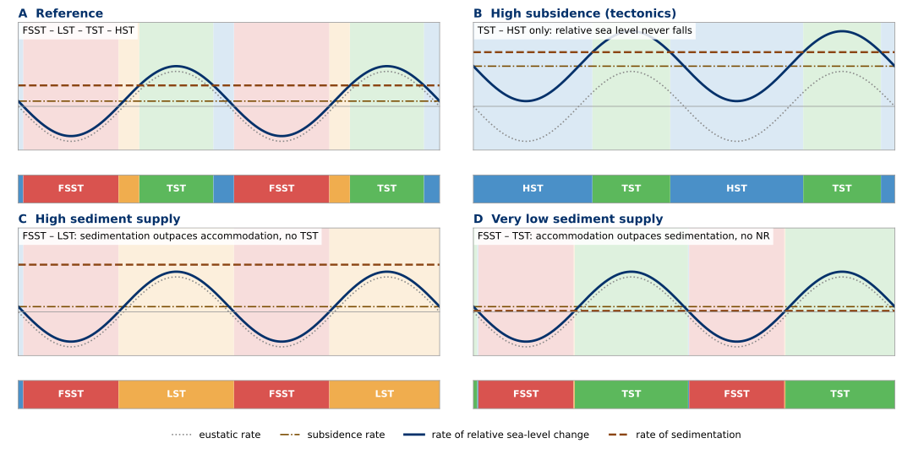
Click to open full resolutionCatuneanu (2019a, Fig. 3; Figure 8) makes the general point: sequences may consist of different combinations of systems tracts, and the composition is basin specific, reflecting local conditions of accommodation and sedimentation. A sequence without an FSST or without a TST is not "incomplete"; it is what the rates allowed.
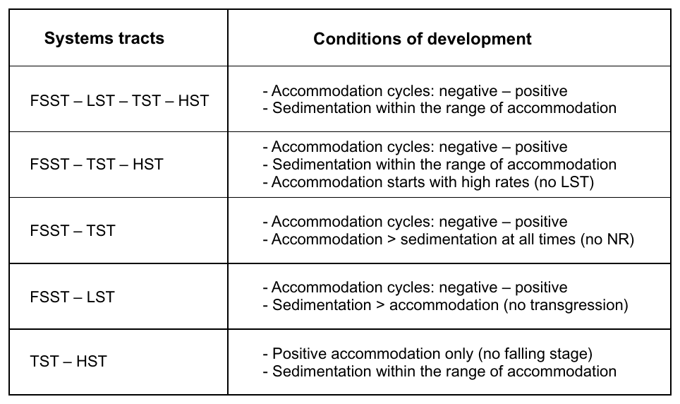
Click to open full resolution9. Coupling of the controls
| Control | Acts mainly on | Effect on the shoreline |
|---|---|---|
| Eustasy (glacio-, tectono-eustasy) | accommodation, basin-wide | cyclic rise and fall of relative sea level; transgressive–regressive cycles at many scales |
| Basin tectonics: subsidence / uplift | accommodation, varies across and along the basin | subsidence adds to a rise and can cancel a eustatic fall; uplift can force a regression |
| Hinterland tectonics | sediment supply | more supply → regression, even during relative sea-level rise |
| Climate | eustasy (ice volume) and sediment supply (weathering, runoff) | acts on both sides of the balance at the same time |
| Autogenic processes (avulsion, lobe switching) | local sediment distribution | local transgressions and regressions not tied to allogenic forcing |
Because subsidence and supply vary in space, the same eustatic cycle can produce transgression in one part of a basin and regression in another. Catuneanu (2019a) stresses that the timing of maximum regressive and maximum flooding surfaces is location-specific along a shoreline, and that coeval progradation and retrogradation may be recorded where the rates vary along strike (e.g. Martinsen & Helland-Hansen, 1995; Catuneanu et al., 1998, as cited there).
Tectonics is not the exception
It is often assumed that eustasy is the high-frequency driver and tectonics only a slow background. Catuneanu et al. (1998) point out that this need not be so: eustasy could keep a uniform rate over several episodes of subsidence and uplift, and tectonics would then drive sequence formation, as they cite for the Late Cretaceous sequences of the western Canada foreland basin (Catuneanu et al., 1997). They also note that if one variable is always much larger than the others (their example: subsidence always greater than eustasy and sedimentation combined), its effect suppresses the others, relative sea level rises continuously and no sequence-bounding surfaces form.
Part V: Three Wells and the Animation
10. Reading the synthetic wells
Three wells were drilled through the same forward model at the end of its run: W1 close to the land, W2 in the middle of the shelf, W3 in deep water at the foot of the slope. Colours are environments: orange = alluvium (fluvial/coastal plain, above sea level), light orange = nearshore sand (shoreface/delta front), green = marine shale (offshore, prodelta, slope foresets), yellow = proximal fan (deep-water sands, toe of slope). Column width is a schematic grain size by environment (M mud, S sand, G gravel), not a measurement. Ticks are time lines 1–30; crowded ticks mean little or no deposition, missing numbers mean time not recorded. Wells are hung from their tops on a common depth scale.
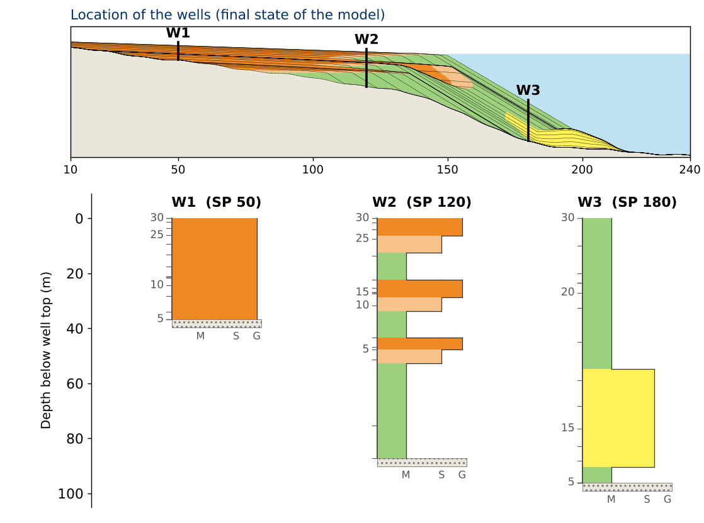
Click to open full resolutionBefore reading on, answer the questions from the lecture:
- W2: describe each package from base to top. Was the shoreline moving seaward or landward?
- W2: the package repeats three times. What has to happen to put marine mud back on top of alluvium?
- W1 contains only alluvium. Was the shoreline ever at W1?
- W3 is always under water. Why does sand reach it only once?
Show the interpretation
W2: each package (marine mud → nearshore sand → alluvium) records the shoreline moving seaward past the well. Marine mud directly on top of alluvium means the shoreline moved landward again, and quickly.
W1: the shoreline never reached W1. The well stayed on land and received sediment only while relative sea level rose; during the falls nothing was deposited there.
W3: always under water and far from the shoreline. Sand arrived only while sea level fell and pushed the shoreline to the shelf edge.
One sea-level history, three different records: what a well shows depends on where it sits relative to the shoreline.
11. The systems-tract animation
In the lecture we watched a high-resolution re-creation of the classic animation by Kendall (2001), after a larger-scale version by J. Baum (SEPM Strata). It is a geometric forward model, not a process simulation. The top panel is a cross-section; the bottom panel is a Wheeler diagram, the same section with time instead of depth on the vertical axis; the wells grow on the right as the cycle unfolds. Figure 10 shows its final frame.
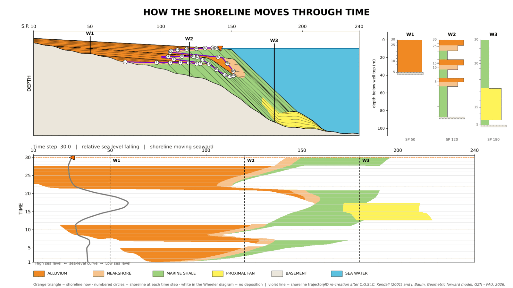
Click to open full resolutionThe logic to follow in the animation is the logic of Part III:
- Follow the orange marker (shoreline now) and the numbered circles. Each change in the direction of the circles is a turnaround in the balance of rates.
- Watch what the shoreline does while sea level is still rising: several times it moves seaward. That is normal regression.
- When sea level falls, the circles step down and seaward, and the alluvial plain stops receiving sediment (white in the Wheeler diagram). The deep-water fan grows only in this stage.
- In the Wheeler diagram, a seaward-growing coloured belt is a regression; a landward step of the facies belts is a transgression.
What is model, not nature
In this model, alluvial deposition is switched off during relative fall and the fan receives sand only during the fall. Both are model rules. In nature, forced regression can be accompanied by fluvial aggradation or by degradation; these trends are "non-diagnostic" and do not define the systems tract (Catuneanu, 2019a). Catuneanu (2019a) also notes that sediment transfer to deep water depends on several variables, and that the capacity of shallow-water systems to retain sediment is lowest during forced regression; deviations from the textbook trend are possible. Use the model to understand the mechanism, not as a rule for where sand must be.
Going Deeper: Beyond the Lecture
12. Transgression during a eustatic fall
Because relative sea level is the sum of eustasy and subsidence, a eustatic fall does not imply a relative fall. Consider a shoreline where (illustrative numbers):
relative sea-level change = −5 + 9 = +4 m/kyr (relative rise)
+4 m/kyr > 3 m/kyr → transgression; water depth increases by 4 − 3 = 1 m/kyr
This is the example given by Catuneanu (2006, p. 86): sea level falls at 5 m/1000 years, subsidence is 9 m/1000 years, so relative sea level rises at 4 m/1000 years; with a sedimentation rate of 3 m/1000 years, accommodation is created faster than it is consumed and the water deepens at 1 m/1000 years. He adds the condition that matters: if the location is near the shoreline, the increase in water depth is likely to be associated with a shoreline transgression. Global sea level falls, yet the shoreline moves landward. The same logic is "Case 2" of Catuneanu et al. (1998): the rates of eustatic change and tectonic subsidence combine into the rate of relative sea-level change; combined with the rate of sedimentation this gives the rate of water-depth change; if relative rise exceeds sedimentation, water depth increases. What is impossible is a transgression during a relative fall: Catuneanu (2019a, Fig. 24; Figure 11) lists all combinations of lateral and vertical shoreline shift as common in nature "except for transgression during relative sea-level fall".
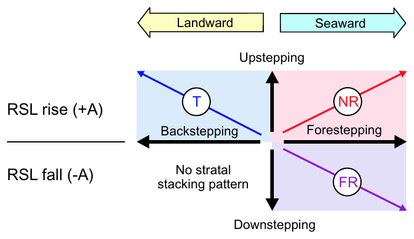
Click to open full resolutionGeological implication: a transgressive succession in a rapidly subsiding basin cannot be correlated with a global sea-level rise just because it is transgressive. Without independent constraints on subsidence and sedimentation, a stacking pattern tells you about the balance, not about eustasy.
13. Water depth is not a proxy for shoreline shift offshore
It is tempting to read deepening-upward facies as transgression and shallowing-upward facies as regression. Catuneanu (2006, p. 90) states that the direct relationship between transgression/regression and water deepening/shallowing "is only safely valid for the shallow areas adjacent to the shoreline"; offshore, deepening and shallowing may be out of phase with the coeval shoreline shifts because subsidence and sedimentation rates vary along dip. His examples: in the Mahakam delta, Indonesia (Verdier et al., 1980, as cited there), shoreline progradation is accompanied by deepening of the water offshore, and submarine fans often prograde in deepening water during rapid regression because of high subsidence in the central parts of many extensional basins. Catuneanu et al. (1998) show the mechanism with a numerical model. They distinguish surfaces defined by stratal stacking patterns (type A) from surfaces defined by water-depth and relative sea-level changes (type B):
- Type A maximum flooding and transgressive surfaces are tied to the turnarounds of the shoreline. Their timing is controlled only by shoreline movement and is not affected by offshore variations in sedimentation and subsidence.
- Type B surfaces mark where the rate of water-depth change is zero. Offshore, water depth depends on local subsidence and local sedimentation, both of which vary along the profile. In their two-dimensional model (eustatic amplitude 10 m, period 2 Ma; subsidence increasing basinward from 20 to 40 m/Ma; sedimentation decreasing from 15 to 5 m/Ma), the water-depth MFS becomes younger offshore and the water-depth CTS older offshore, and basinward of about 71 km the net subsidence of the depositional surface (subsidence minus sedimentation) always exceeds the maximum rate of eustatic fall, so no water-depth MFS forms there at all.
- Citing Naish & Kamp (1997), they note that the maximum water depth often occurs within the lower part of the highstand (normal regressive) wedge, i.e. after the shoreline has already turned to regression.
Key concept
"Deepening-upward and shallowing-upward facies should not be confused with transgressive and regressive systems tracts. The latter are strictly controlled by the shoreline movements" (Catuneanu et al., 1998, abstract). Offshore, the sea can deepen while the shoreline regresses. In the arithmetic of Section 12, water deepening and transgression coincide only because we evaluated both at the shoreline.
14. Trajectory, not lithology, defines the systems tract
Shoreline trajectory analysis (Helland-Hansen & Martinsen, 1996; Helland-Hansen & Hampson, 2009) classifies the shoreline path by its direction. Catuneanu (2019a) separates diagnostic from non-diagnostic features:
- Diagnostic: the geometric trend of the shoreline. Backstepping and upstepping of shallow-water facies (coastal onlap) defines transgression; progradation with downstepping of shoreface or delta-front facies defines forced regression; progradation with upstepping defines normal regression.
- Non-diagnostic: aggradation or degradation in fluvial and coastal environments, which can accompany more than one systems tract.
Lithology is not the defining criterion, for two reasons. First, lithology changes along dip and strike, while sequence stratigraphic surfaces are defined independently of it; conformable surfaces such as the maximum flooding surface within a condensed section can be lithologically "cryptic", because the change in stacking pattern, rather than grain size, is the defining feature. Second, the same lithology occurs in different systems tracts: a coarsening-upward shoreface forms in both normal and forced regression. What separates them is the trajectory and its expression, e.g. upstepping vs downstepping of shoreface facies downdip, expanded vs compressed shoreface, and gradationally based vs sharp-based shoreface (Catuneanu, 2019a).
Catuneanu (2019a) also notes that pure aggradation (a shoreline that only steps up) and pure progradation at relative stillstand are theoretical end-members that are uncommon in nature, and that even under constant relative rise and constant supply the stacking pattern can change from progradation to retrogradation, because sedimentation rates fall as the sediment is spread over a wider area during progradation (autoretreat; Muto & Steel, 2002, as cited there). This is the honest answer to the lecture question "relative sea level rises at a constant rate and supply doubles: what happens?": the shoreline moves seaward only if the new sedimentation rate at the shoreline exceeds the rate of rise, and that rate itself changes as the system progrades.
Figure 12 shows present-day examples of both regressive trajectories. In the Canadian Arctic the deltas and beach ridges step seaward and downward while rivers incise the abandoned delta plain: forced regression. On the east coast of India the delta and the strandplain build seaward at a nearly constant level: normal regression.
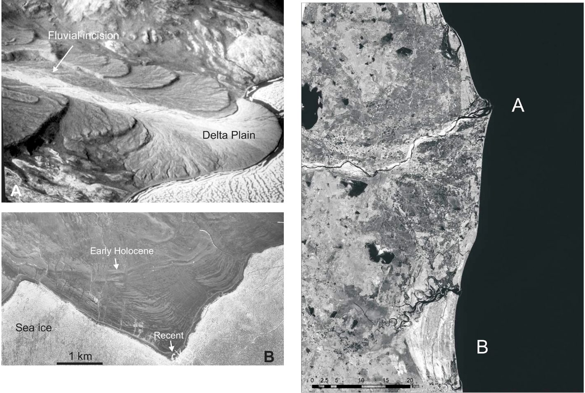
Click to open full resolutionCase study preview: Po Plain – Adriatic Sea
Amorosi, Maselli & Trincardi (2016) trace a late Quaternary source-to-sink system over more than 1000 km from fluvial to deep-marine settings. Two observations from their abstract connect directly to this module: (1) because of high subsidence rates, the middle Pleistocene forced-regressive systems tracts are exceptionally expanded, i.e. tectonics modulates how much of the record a eustatic fall leaves; (2) within the Late glacial–Holocene transgression, the Younger Dryas cold reversal records a short-lived episode of subaqueous progradation, a regression nested in a transgression. They also report allogenic control dominating the TST and a predominantly autogenic control in the HST. The basin is a later case study in the course.
Worked Exercise: Four Rate Scenarios
For each scenario, compute the rate of relative sea-level change at the shoreline, state the shoreline shift, its stacking pattern and trajectory, and the possible systems tract(s). Rates in m/kyr; numbers are illustrative. Check yourself with the calculator above only after you have written your answer.
- Scenario 1. Eustasy −2, subsidence +6, sedimentation 1.
- Scenario 2. Eustasy +1, subsidence +2, sedimentation 6. The underlying unit is a forced-regressive shoreface.
- Scenario 3. Eustasy −4, subsidence +1, sedimentation 10 (a large delta is building out).
- Scenario 4. Eustasy +1, subsidence +2, sedimentation 2. Later, sediment supply doubles and the sedimentation rate at the shoreline becomes 4.
Solution, scenario 1
Relative change = −2 + 6 = +4 (relative rise). 4 > 1 → transgression: backstepping + upstepping, transgressive trajectory, TST. A eustatic fall with transgression: subsidence wins. Water depth at the shoreline increases at 4 − 1 = 3 m/kyr.
Solution, scenario 2
Relative change = +3 (rise). 6 > 3 → normal regression: forestepping + upstepping, ascending regressive trajectory. Because it follows a forced regression, it is a lowstand normal regression (LST). The same rates above a transgressive unit would give an HST: the rates alone cannot tell lowstand from highstand.
Solution, scenario 3
Relative change = −4 + 1 = −3 (relative fall). → forced regression: forestepping + downstepping, descending regressive trajectory, FSST. The high sedimentation rate does not make it a normal regression; it only changes how much sediment the forced-regressive wedge contains. A sharp-based shoreface with a regressive surface of marine erosion at its base is the typical expression (Block 5).
Solution, scenario 4
Relative change = +3. First stage: 3 > 2 → transgression (TST). After supply doubles: 4 > 3 → normal regression (highstand, because it follows a transgression). The turnaround, where the shoreline stops moving landward, marks the maximum flooding surface. Note that doubling the supply reversed the shift only because the new rate exceeded the rate of rise; had sedimentation risen from 1 to 2, the shoreline would still transgress, only more slowly. And in a real system the sedimentation rate at the shoreline is not fixed by supply alone (autoretreat, Section 14).
Key Points Summary
- Accommodation is the space available for sediment to accumulate; its rate of change is the rate of relative sea-level change = eustasy + subsidence/uplift
- The shoreline is where accommodation and sedimentation are in balance; it moves whenever either rate changes
- Relative rise faster than sedimentation → transgression (backstepping + upstepping, TST)
- Sedimentation faster than relative rise → normal regression (forestepping + upstepping, LST or HST)
- Relative fall → forced regression (forestepping + downstepping, FSST), whatever the sediment supply
- Read the rates, not the curve: the shoreline turns where the two rates cross, not at highstand or lowstand
- Lowstand vs highstand normal regression is decided by the preceding stacking pattern
- The same eustatic signal gives different systems-tract combinations under different subsidence and supply; a eustatic fall can even coincide with transgression
- Offshore, water-depth changes do not track shoreline shifts; systems tracts are defined by the shoreline trajectory, not by lithology or bathymetry
- What a well records depends on where it sits relative to the shoreline
Key References
Lecture 1 references: Catuneanu, O. (2019a) Model-independent sequence stratigraphy. Earth-Science Reviews 188, 312–388 • Helland-Hansen, W. & Martinsen, O.J. (1996) Shoreline trajectories and sequences: description of variable depositional-dip scenarios. Journal of Sedimentary Research 66, 670–688 • Helland-Hansen, W. & Hampson, G.J. (2009) Trajectory analysis: concepts and applications. Basin Research 21, 454–483 • Jervey, M.T. (1988) Quantitative geological modeling of siliciclastic rock sequences and their seismic expression. In: Wilgus, C.K. et al. (Eds.), Sea-Level Changes: An Integrated Approach. SEPM Special Publication 42, 47–69 • Kendall, C.G.St.C. (2001) Major sequence stratigraphic and chronostratigraphic surfaces (animation, after J. Baum). SEPM Strata, www.sepmstrata.org • Posamentier, H.W., Jervey, M.T. & Vail, P.R. (1988) Eustatic controls on clastic deposition I – conceptual framework. SEPM Special Publication 42, 109–124
Going deeper: Catuneanu, O., Willis, A.J. & Miall, A.D. (1998) Temporal significance of sequence boundaries. Sedimentary Geology 121, 157–178 • Catuneanu, O. (2006) Principles of Sequence Stratigraphy. Elsevier, Amsterdam, 375 pp. (Chapter 3, Accommodation and shoreline shifts) • Catuneanu, O., Galloway, W.E., Kendall, C.G.St.C., Miall, A.D., Posamentier, H.W., Strasser, A. & Tucker, M.E. (2011) Sequence stratigraphy: methodology and nomenclature. Newsletters on Stratigraphy 44(3), 173–245 • Amorosi, A., Maselli, V. & Trincardi, F. (2016) Onshore to offshore anatomy of a late Quaternary source-to-sink system (Po Plain–Adriatic Sea, Italy). Earth-Science Reviews 153, 212–237
Cited as reported in the works above (not read directly): Catuneanu et al. (1997), Martinsen & Helland-Hansen (1995) and Naish & Kamp (1997), as cited in Catuneanu et al. (1998); Verdier et al. (1980), as cited in Catuneanu (2006); Muto, T. & Steel, R.J. (2002) Basin Research 14, 303–318, as cited in Catuneanu (2019a).
Online: SEPM Strata, www.sepmstrata.org
Self-Assessment Quiz
Twelve questions. Each one asks you to apply the balance of rates, not to recall a definition. Options are shuffled each time the page loads.